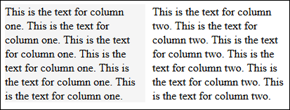
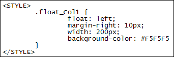
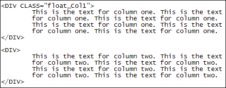
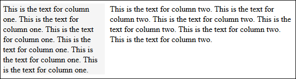
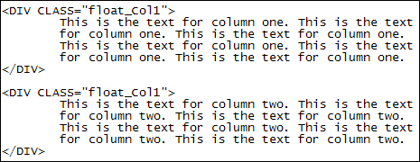

The CSS Float Property
Another way to manipulate the normal, static flow of your web pages is with the float property. You have already used this property in a previous section to wrap text around images. But you can also use the float property to have columns of text side by side. You can even use float to have navigations bars on the left and right of your pages. (We'll use float in our page layouts, which are coming up soon.)
As an example of column floating, have a look at the image below, taken from a browser:

So we have two columns of text side-by-side. The first one has a grey background so you can see the column better. It also has a 10 pixel margin. Here's the CSS:

And here's the HTML:

For the HTML, we've just used the DIV tags for two paragraphs of text. The first paragraph has the CSS class applied to it.
Notice two things about the CSS code, though. The first thing to notice is that we have used float: left. The second thing to notice is that we have set a width for the column of 200 pixels. If you don't set a width then any text you have for your column will simply flow from left to right.
There is a problem with our approach, however. Have a look at the columns in the browser again. Although they look nicely side-by-side, this is only because we manipulated the browser. We deliberately made it smaller so that the text resized itself. If we make the browser bigger, here's what happens:

The text in the second column will stretch from left to right to fill the available space.
To stop it doing that, you can add the class to the second DIV, as well:

Now both paragraphs of text are floated left, and have a width of 200 pixels. The browser can now be resized and the two columns will stay in place.
To start text on a new line underneath the columns, you can use the clear property in CSS, remember:
.clear {
clear: left;
}
This clears the float value and returns you to the normal, static flow. (You can replace left with right or both depending on your needs.)
In the next lesson, you'll see how to create a simple one column layout.This will introduce you to the new HTML5 elements.